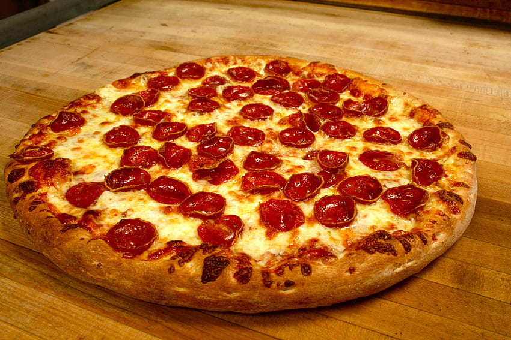

Description
Indulge in the classic flavors of a Pepperoni Pizza, featuring a golden, crispy crust topped with rich tomato sauce, gooey mozzarella cheese,
and perfectly seasoned pepperoni slices. Bake to perfection for a mouthwatering, savory treat that's sure to satisfy your pizza cravings.
Ingredients
- 1 pizza crust (store-bought or homemade)
- 1/2 cup pizza sauce
- 1 1/2 cups shredded mozzarella cheese
- 1/2 cup sliced pepperoni
- 1/4 teaspoon dried oregano
- 1/4 teaspoon garlic powder
- 1/4 teaspoon red pepper flakes (optional, for a bit of heat)
- Fresh basil leaves for garnish (optional)
Steps
- Preheat your oven to the temperature specified on your pizza crust package or recipe (usually around 450°F or 232°C).
- Roll out your pizza dough on a lightly floured surface to your desired thickness. If you're using store-bought dough, follow the package instructions for rolling it out.
- Place the rolled-out dough onto a pizza stone or a baking sheet lined with parchment paper.
- Spread the pizza sauce evenly over the dough, leaving a small border around the edges for the crust.
- Sprinkle the shredded mozzarella cheese over the sauce, covering the entire pizza.
- Arrange the sliced pepperoni evenly on top of the cheese.
- Sprinkle dried oregano, garlic powder, and red pepper flakes (if using) over the pepperoni for added flavor.
- Carefully transfer the pizza to the preheated oven and bake according to your crust's instructions, typically for about 12-15 minutes or until the crust is golden and the cheese is bubbly and slightly browned.
- Once the pizza is done, remove it from the oven using oven mitts or a pizza peel.
- Let the pizza cool for a minute or two, then slice it into wedges.
- Serve hot and enjoy your homemade pepperoni pizza!